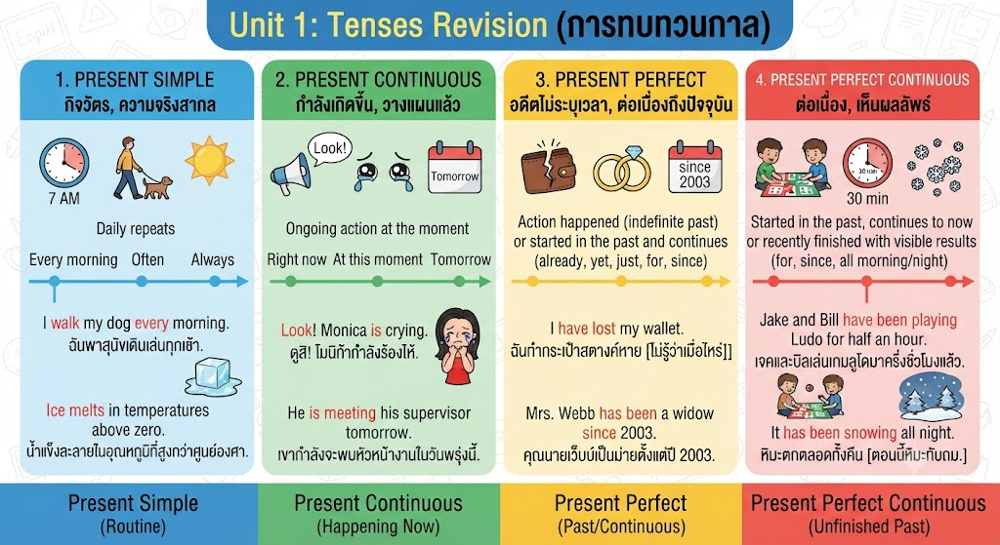

การเข้าใจ Tense ทั้ง 4 รูปแบบ (Present Simple, Continuous, Perfect, Perfect Continuous) คือรากฐานสำคัญของการสื่อสารภาษาอังกฤษที่ถูกต้อง นักเรียนชั้น ม.5 ควรเข้าใจความแตกต่างของ "จุดเวลา" และ "ลักษณะของเหตุการณ์" ดังนี้:

1. Present Simple: ใช้บอกกิจวัตร (Habit) หรือข้อเท็จจริงที่เป็นสากล (General Truth) คำบอกเวลาที่พบบ่อยคือ always, usually, every day.
2. Present Continuous: เน้นความชั่วคราว (Temporary) ของเหตุการณ์ที่กำลังเกิดขึ้น ณ ขณะพูด หรือการวางแผนล่วงหน้าชัดเจน
3. Present Perfect: ใช้กับเหตุการณ์ที่จบลงแล้วแต่ส่งผลถึงปัจจุบัน (Result) โดยไม่เน้นเวลาที่เกิด แต่เน้นผลลัพธ์ (Experience/Achievement)
4. Present Perfect Continuous: ใช้เน้น "ระยะเวลา" (Duration) ของเหตุการณ์ที่ทำต่อเนื่องมาจากอดีตจนถึงปัจจุบัน โดยคำสำคัญมักมี for และ since
กระบวนการคิด: วิเคราะห์คำบอกเวลา (Signal words) และบริบท (Context) ก่อนเลือกคำตอบเสมอ อย่ารีบตัดสินใจเพียงแค่เห็นรูปประโยค
เขียนโดย พระจอมเกล้าติวเตอร์